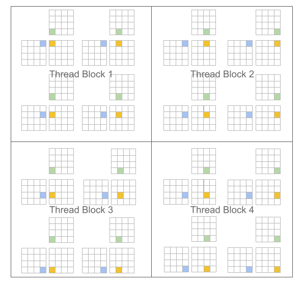

Introduction¶
Motivations¶
Over the past decade, Deep Neural Networks (DNNs) have emerged as an important class of Machine Learning (ML) models, capable of achieving state-of-the-art performance across many domains ranging from natural language processing [SUTSKEVER2014] to computer vision [REDMON2016] to computational neuroscience [LEE2017]. The strength of these models lies in their hierarchical structure, composed of a sequence of parametric (e.g., convolutional) and non-parametric (e.g., rectified linearity) layers. This pattern, though notoriously computationally expensive, also generates a large amount of highly parallelizable work particularly well suited for multi- and many- core processors.
As a consequence, Graphics Processing Units (GPUs) have become a cheap and accessible resource for exploring and/or deploying novel research ideas in the field. This trend has been accelerated by the release of several frameworks for General-Purpose GPU (GPGPU) computing, such as CUDA and OpenCL, which have made the development of high-performance programs easier. Yet, GPUs remain incredibly challenging to optimize for locality and parallelism, especially for computations that cannot be efficiently implemented using a combination of pre-existing optimized primitives. To make matters worse, GPU architectures are also rapidly evolving and specializing, as evidenced by the addition of tensor cores to NVIDIA (and more recently AMD) micro-architectures.
This tension between the computational opportunities offered by DNNs and the practical difficulty of GPU programming has created substantial academic and industrial interest for Domain-Specific Languages (DSLs) and compilers. Regrettably, these systems – whether they be based on polyhedral machinery (e.g., Tiramisu [BAGHDADI2021], Tensor Comprehensions [VASILACHE2018]) or scheduling languages (e.g., Halide [JRK2013], TVM [CHEN2018]) – remain less flexible and (for the same algorithm) markedly slower than the best handwritten compute kernels available in libraries like cuBLAS, cuDNN or TensorRT.
The main premise of this project is the following: programming paradigms based on blocked algorithms [LAM1991] can facilitate the construction of high-performance compute kernels for neural networks. We specifically revisit traditional “Single Program, Multiple Data” (SPMD [AUGUIN1983]) execution models for GPUs, and propose a variant in which programs – rather than threads – are blocked. For example, in the case of matrix multiplication, CUDA and Triton differ as follows:
CUDA Programming Model (Scalar Program, Blocked Threads) |
Triton Programming Model (Blocked Program, Scalar Threads) |
|---|---|
#pragma parallel
for(int m = 0; i < M; m++)
#pragma parallel
for(int n = 0; j < N; n++){
float acc = 0;
for(int k = 0; k < K;k ++)
acc += A[i, k]* B[k, j];
C[i, j] = acc;
}
|
#pragma parallel
for(int m = 0; m < M; m += MB)
#pragma parallel
for(int n = 0; n < N; n += NB){
float acc[MB, NB] = 0;
for(int k = 0; k < K; k += KB)
acc += A[m:m+MB, k:k+KB]
@ B[k:k+KB, n:n+NB];
C[m:m+MB, n:n+NB] = acc;
}
|
 |
|

A key benefit of this approach is that it leads to block-structured iteration spaces that offer programmers more flexibility than existing DSLs when implementing sparse operations, all while allowing compilers to aggressively optimize programs for data locality and parallelism.
Challenges¶
The main challenge posed by our proposed paradigm is that of work scheduling, i.e., how the work done by each program instance should be partitioned for efficient execution on modern GPUs. To address this issue, the Triton compiler makes heavy use of block-level data-flow analysis, a technique for scheduling iteration blocks statically based on the control- and data-flow structure of the target program. The resulting system actually works surprisingly well: our compiler manages to apply a broad range of interesting optimization automatically (e.g., automatic coalescing, thread swizzling, pre-fetching, automatic vectorization, tensor core-aware instruction selection, shared memory allocation/synchronization, asynchronous copy scheduling). Of course doing all this is not trivial; one of the purposes of this guide is to give you a sense of how it works.
References¶
- SUTSKEVER2014
Sutskever et al., “Sequence to Sequence Learning with Neural Networks”, NIPS 2014
- REDMON2016
Redmon et al., “You Only Look Once: Unified, Real-Time Object Detection”, CVPR 2016
- LEE2017
Lee et al., “Superhuman Accuracy on the SNEMI3D Connectomics Challenge”, ArXiV 2017
- BAGHDADI2021
Baghdadi et al., “Tiramisu: A Polyhedral Compiler for Expressing Fast and Portable Code”, CGO 2021
- VASILACHE2018
Vasilache et al., “Tensor Comprehensions: Framework-Agnostic High-Performance Machine Learning Abstractions”, ArXiV 2018
- JRK2013
Ragan-Kelley et al., “Halide: A Language and Compiler for Optimizing Parallelism, Locality, and Recomputation in Image Processing Pipelines”, PLDI 2013
- CHEN2018
Chen et al., “TVM: An Automated End-to-End Optimizing Compiler for Deep Learning”, OSDI 2018
- LAM1991
Lam et al., “The Cache Performance and Optimizations of Blocked Algorithms”, ASPLOS 1991
- AUGUIN1983
Auguin et al., “Opsila: an advanced SIMD for numerical analysis and signal processing”, EUROMICRO 1983